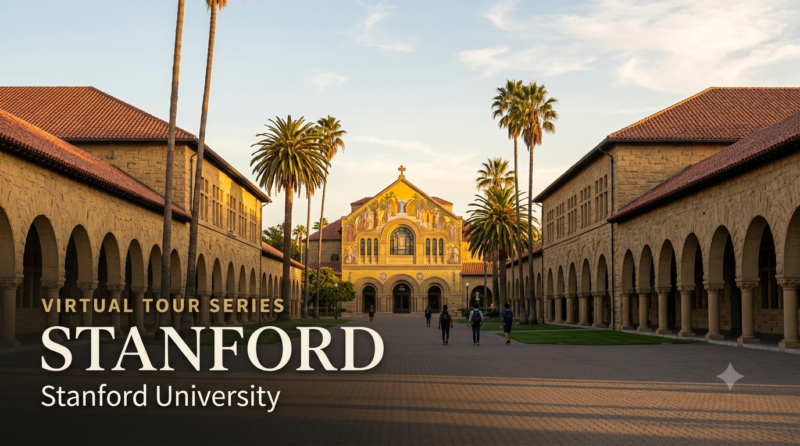

University Spotlight: Stanford — Virtual Tour Guide

I'm delighted to share the seventh edition of the University Virtual Tour Series — a curated resource to help your child explore some of the world's leading universities from the comfort of home. Stanford University sits at the heart of Silicon Valley and is the birthplace of companies that have transformed how the world lives and works. Students from both the CBSE and Cambridge programmes will find this resource relevant — Stanford accepts both qualifications.
I strongly recommend that parents of Grade 9 and above students make the time to visit at least one university — Stanford, a local university in India, or any institution of your choice. A physical visit gives your child something no virtual tour can replicate: they will see the infrastructure and facilities with their own eyes, observe how professors engage with students in live classrooms, and most importantly, spend time talking to existing students about their day-to-day experience. These conversations almost always leave a lasting impression and help students make more grounded, confident decisions about their future. If you'd like guidance planning a visit, feel free to get in touch.
Stanford Admission Requirements — CBSE and Cambridge A Level
The table below summarises what Stanford officially requires for students applying through each pathway. Stanford's admissions process is the most selective in the United States — a 3.7% acceptance rate in 2025. Reach out for personalised application strategy guidance.
| Requirement | CBSE Grade 12 | Cambridge A Level |
|---|---|---|
| Qualification | Indian Standard 12 — CBSE Board; recognised and accepted by Stanford | Cambridge International A Level — 3–4 A Level subjects; well-regarded |
| Typical Academic Profile | 90–95%+ aggregate in top subjects; near-perfect marks in core subjects; top 1% of cohort nationwide | A*A*A or A*AA; top marks in relevant subjects; academic distinction at the national or international level |
| SAT / ACT | Test-Required (Stanford reinstated testing requirements from Class of 2030) — Middle 50%: SAT 1500–1580; ACT 34–36 | Same — all applicants must submit SAT or ACT regardless of qualification held |
| Application Portal | Common Application or Coalition Application | Same |
| Restrictive Early Action (REA) | Deadline: November 1 | Decision: mid-December | Non-binding — REA means no other private US university Early applications allowed simultaneously | Same |
| Regular Decision (RD) | Deadline: January 2 | Decision: late March | Same |
| Essays | Common App essay (650 words) + Stanford supplemental essays: 3 short essays (250 words each) + 5 short answers (50 words each) + optional additional information | Same essay requirements |
| Teacher Recommendations | 2 teacher recommendations + 1 counsellor recommendation; all required | Same |
| Interview | Alumni interview — conducted by Stanford Alumni Association volunteers; available in most major Indian cities; conversational (45–60 minutes) | Same |
| Financial Aid | Need-blind for all applicants including international; 100% need-based; apply via CSS Profile | Same — all admitted students receive full demonstrated need |
Unlike MIT (which has a structured core curriculum) or Harvard (with its General Education requirements), Stanford operates an open curriculum with minimal general education requirements — students have significant freedom to explore across disciplines from their first year. Stanford does require one year of Writing in the Major, one year of a Language (or equivalent), and distribution requirements across areas, but the flexibility is markedly greater than most elite universities. For students who are curious across subjects and not yet certain of their exact academic path, Stanford's curriculum is designed to support exploration without penalty.
Voices from Stanford — Indian Students and Alumni
"The energy at Stanford is different from anywhere else I've experienced. Everyone is working on something that might change the world — and they genuinely believe it will."
— Vinod Khosla, India, MS Industrial Engineering, Stanford | Co-Founder, Sun Microsystems | Founder, Khosla Ventures
"Stanford was where I learned that being wrong quickly and learning from it was more valuable than being cautious. That shaped how I approach every problem."
— Narayana Murthy, India, MS Computer Science, IIT Kanpur | Stanford Executive Education | Co-Founder, Infosys
Why Should Your Child Consider Stanford?
1. QS #2 Globally — The World's Leading University for Innovation and Entrepreneurship
Stanford is ranked #2 globally in QS 2027 — tied with Imperial College London — and is consistently the #1 or #2 university in the world across STEM, Computer Science, and Engineering rankings. Stanford also consistently ranks #1 globally for graduate entrepreneurship (Princeton Review, Poets & Quants) — its alumni have founded Google, Yahoo, HP, Netflix, Snapchat, Instagram, LinkedIn, and hundreds of other companies now used by billions of people daily. If your child aspires to build something that changes the world — in technology, biotech, clean energy, or any field — there is no university on earth that provides a stronger foundation for that path than Stanford.
2. Location — Silicon Valley: The World's Most Powerful Innovation Ecosystem
Stanford's campus is embedded within Silicon Valley — the most concentrated ecosystem of technology companies, venture capital firms, and startup founders in the world. Palo Alto, Mountain View, Cupertino, and San Jose surround the campus; Apple, Google, Meta, NVIDIA, and thousands of startups are within 30 minutes. Stanford students routinely intern, part-time work, do research, and attend events at companies that are household names globally — not as a future possibility, but as a regular feature of their student experience. For Indian students interested in Computer Science, AI, Product Management, or entrepreneurship, this proximity to the industry is extraordinary.
3. The Stanford Research Ecosystem — Undergraduates at the Frontier
Stanford is among the world's most research-intensive universities. From their first year, Stanford undergraduates can apply to work in research labs across every discipline — including the Stanford AI Lab (SAIL), the Human-Computer Interaction (HCI) Group, the Stanford Systems Biology Lab, and over 100 other research centres. Research opportunities for undergraduates at Stanford are not reserved for exceptional students or late in the degree — they are actively encouraged and facilitated from Year 1. For students motivated by research, Stanford provides access that few universities anywhere in the world can match.
4. Need-Blind, Full-Need Financial Aid — Families with Income Under USD 100,000 Pay Nothing
Stanford is one of only five universities in the world that is simultaneously need-blind, need-based, and full-need for ALL students including international. Families with annual household income below USD 100,000 pay zero tuition — zero. Those with income USD 100,000–150,000 typically pay 0–10% of income. The full annual cost of attendance is approximately USD 94,000, but Stanford's median financial aid package covers 70% of that for aided students. 52% of Stanford students receive need-based scholarship aid; the average aid package is approximately USD 61,000/year. This makes Stanford financially accessible to Indian middle-class families in a way that no UK university is.
What Parents Should Know
- Stanford's acceptance rate is approximately 3.7% — the most selective in the United States; a perfect academic profile is a baseline; the essays, recommendations, and extracurricular distinction are equally decisive
- Stanford reinstated its test-required policy from Class of 2030 — students must submit SAT or ACT scores; aim for SAT 1500+ as a minimum; middle 50% is 1500–1580
- Restrictive Early Action (REA) deadline is November 1 — students cannot apply early to any other private US university simultaneously; they can apply to public universities early
- Stanford's open curriculum means students can delay declaring a major until the end of their first year or even second year — an important consideration for students still exploring their interests
- F-1 student visa required — apply at least 5–6 months before programme start; since June 2025, all social media profiles must be public for visa interview
- The South Asian Students Association (SASA) at Stanford and the Indian students community are active and welcoming — with Diwali celebrations, Holi on the Main Quad, and cultural events as regular features of campus life
To discuss Stanford application strategy, Common App essay planning, extracurricular profile building, SAT preparation, financial aid, and interview preparation for your child, feel free to write to me at pcmadankumar@gmail.com or get in touch via the contact page. I'm happy to set up a one-on-one session at a time convenient for you.
I curate University Virtual Tour resources as part of my commitment to helping students and parents make informed post-secondary decisions. Future editions will continue to spotlight leading universities across major study destinations worldwide, including the UK, USA, Australia, Canada, India, and Singapore.
Best wishes,
Madan Kumar PC
References
- QS World University Rankings 2027 — Stanford #2 globally, tied with Imperial (released 18 June 2026). topuniversities.com
- Stanford University — Undergraduate Admission: International Students. admission.stanford.edu
- Stanford University — Apply. admission.stanford.edu
- Stanford University — Testing Policy (reinstated 2024). admission.stanford.edu
- Stanford University — Financial Aid. financialaid.stanford.edu
- Stanford University — Knight-Hennessy Scholars (Graduate). knight-hennessy.stanford.edu
- Stanford University Campus Tour — YouTube. youtube.com